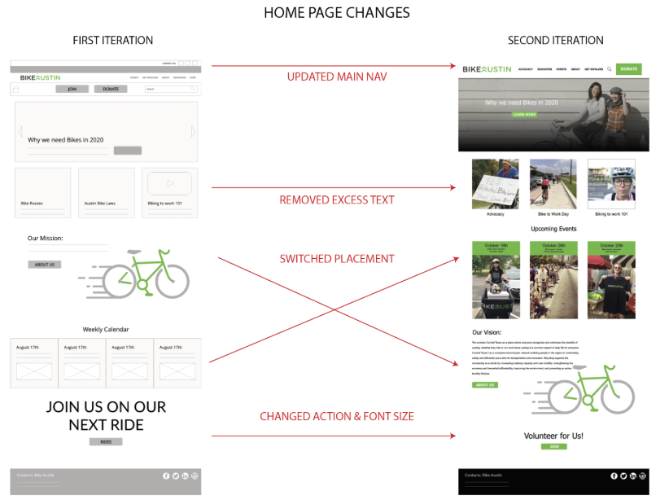

Bike Austin
Not for Profit Organization
Responsive Website Redesign
Role: UX | UI Designer
Bike Austin is a well known and well respected non-profit organization operating in the Austin area. They make major moves in local politics to increase bike safety and education throughout the city.
The Bike Austin website serves as a community hub for bike riders to get involved, join social rides, and spread advocacy for the cause.
My team worked with Bike Austin to improve the User Experience of the site to expand the organization's capacity for impact

We began our research with a series of:
Stakeholder Interviews

User Testing and Surveys


and Accessability Testing of the current site.
We then combined and analyzed all of our data
This data helped us develop our target user, Schwinn McGears :)

User Insights:
Schwinn needs a better education of how to bike safely through Austin.
During our research we discovered that most people in Austin are unaware of the bike laws and resources that are required for a successful biking city. However, the information is hard to find on the Bike Austin website.
How might we educate people about the safety needs of the bike community in Austin to create a more robust cycling community?
Problem Statement:
We believe that by improving the Bike Austin website we can better educate the community of Austin to emphasize the safety needs of cyclist to create a more robust cycling community.
Our team made User Scenarios and Storyboards to help guide us in our design process while keeping our user in mind.
We then conducted research on what features were most important in achieving the organization's goals.
Once those key features were narrowed down we worked on the information architecture to imporove how the information and resources are presented to the user. This point was very important since site navigation proved to be one of the main issues for users to overcome.
With a clear idea of how the data should be laid out we created a user flow. This tells us how the user will move throughout the site.
The UI Design process began with sketches. This makes an easy edit process but allows us to quickly test our features impact on the user.
We then produced low and mid fidelity mockups for user and stakeholder testing.
Bike Austin provided their own style guide and branding that they felt passionate about sticking to. We worked with these guidelines to keep to brand at home, but still giving the site an up-to-date, fresh, feel.
We did a series of user and stakeholder tests producing iterations along the way.

Our team created two different versions of the website, the first design with a side navigation bar, and the second design with drop down menus from the top nav bar. The design version with the side navigation bar was overwhelmingly the favorite choice by 100% of users tested and stakeholders.
This new design solves the main issues learned from the organization stakeholders and site users:
-Information Heirachy and Site Navigation
-Funnels users to get involved, advocate, and donate to Bike Austin
-Provides a clear calender of events for Riders to join
-Clealy displays bike safety and education
:)